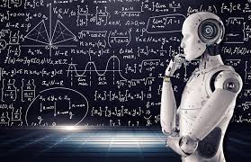
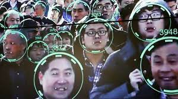

Propos introductifs
L’intelligence artificielle, technologie développée par et pour l’Homme dans l’affirmation de sa suprématie, pourrait-elle l’emmener à s’y soumettre ?
Au cours de son évolution, l’intelligence artificielle (ci-après "IA") a soulevé de nombreuses réflexions. Maël Pégny, chercheur post-doctoral en philosophie ayant étudié la logique et la physique nous a présenté lors d’une conférence “IA et Vie privée” ses réflexions à ce sujet.
- Alternance
La définition de l'IA
L’IA se définit comme “l’ensemble des théories et des techniques développant des programmes informatiques complexes capables de simuler certains traits de l'intelligence humaine (raisonnement, apprentissage...)” (Dictionnaire Le Robert). Cette définition très générale est complétée par Maël Pégny, qui cite celle contenue à l’article 1 considérant 6 dans le Projet de Règlement de l’Union Européenne (UE ci- après) sur l’IA.
La notion de vie privée quant à elle, est la sphère d'intimité de la personne. Elle se définit par opposition à la vie publique. Cette sphère a vocation à rester à l'abri des regards d'autrui. Le droit au respect de la vie privée est juridiquement protégée notamment par l’article 9 du Code civil. - Gestion des dossiers d'inscriptions et contrôle des factures
Annonce du plan
Nous avons choisi de reprendre la réflexion de Maël Pégny en quatre axes. Dans un premier temps il conviendra de s’intéresser à l’avancée de l’IA (I), puis nous analyserons l’IA au service de la surveillance de masse (II). Dans un troisième temps, nous présenterons l'établissement d’un cadre juridique de l’IA au sein de
I. LES AVANCÉES DE L'IA

Les premières bribes d’IA dans l’Histoire remontent aux environs des années 50. En 1946, l’américain Murray Leinster publie la nouvelle « A logic named Joe », dans laquelle il imagine un système informatique dont l’intelligence surpasse celle qui l’a conçue. Cette nouvelle soulève les premières questions sur les possibles dérives de l’informatique et des réseaux de communication. L’année suivante, Alan Turing a tenu une conférence à la Royal Astronomical Society, située à Burlington House (Londres), au cours de laquelle il mentionne notamment la possible existence d’une intelligence des ordinateurs. En 1950, Monsieur Turing publie l’article « Computing Machinery and Intelligence » dans la revue philosophique « Mind », dans lequel il présente le test de Turing. Dans cet article, Turing pose notamment la question de la capacité des machines à penser. Plus précisément, l’auteur décrit le “Jeu de l’imitation”, qui consisterait à tester la faculté d’une machine à imiter les conversations humaines. Pour ce faire, un humain engagerait donc une conversation verbale, à l’aveugle avec un autre humain et un ordinateur. A la fin de ce test, si le premier humain n’est pas capable de déterminer lequel de ses interlocuteurs est l’ordinateur, on considère que la machine a réussi le test. Peu de temps après, il programme un ordinateur « MADAM » (Manchester Automatic Digital Machine), conçu pour rédiger des lettres d’amour.
Le terme “Intelligence Artificielle” fait sa première apparition en 1956, durant la conférence de Darthmouth. Lors de cette conférence, il est question de financer un projet d’étude, mené par 10 hommes, sur l’IA, notamment son aptitude à communiquer et résoudre des problèmes réservés aux humains.
Les avancées de l'IA
- Une des grandes avancées de l’IA fut marquée par l’apparition du Perceptron MARK I. Cet ordinateur fut utilisé pour la reconnaissance d’image, sur la base d’une grille de 400 cellules photoélectriques. Ce moment dans l’histoire de l’IA marque l’avènement de ce qu’est aujourd’hui la branche dominante en la matière : le Machine Learning. Monsieur Pégny définit le Machine Learning comme un système qui, au lieu de recevoir des instructions, apprend par lui-même à partir de l’analyse d’un grand nombre d’exemples. Dans ses débuts, les recherches sur l’IA étaient principalement financées par le Département de la Défense américain.
Restaurant Le Royal Lourdes - Juillet / Août 2017
Accueil des clients, service
II. L'IA AU SERVICE DE LA SURVEILLANCE DE MASSE
- Avec le développement de l'IA ces dernières années, elle a pu servir à de nombreuses causes aussi pratiques que contestables. Les nouvelles méthodes en date sont l’utilisation de l’intelligence artificielle au profit de la surveillance de masse, on parle de « l’âge d’or de la surveillance » selon Bruce Schneier. Les institutions n’ont jamais amassé autant de données sur les individus et disposé d’autant de moyens de surveillance par le biais de divers moyens plus ou moins discret avec notamment :
la géolocalisation de masse par le téléphone portable, l’accès aux conversations ordinaires et aux réseaux de relation par réseaux sociaux, la numérisation des informations financières et commerciales, les moteurs de recherche.
En effet, l’intelligence artificielle est de plus en plus utilisée notamment par les forces de l’ordre dans le but de faire de la reconnaissance faciale dans des lieux publics afin de retrouver des auteurs d’infractions ou tout simplement de surveiller la population.
La question de la préservation de la vie privée est au cœur du débat étant donné que de tels outils utilisés le plus souvent par les services répressifs pourraient fortement entraver les droits et libertés de chacun.
Les technologies de surveillance désignent tous les outils mis à la disposition de la police et des autorités pour surveiller la population.
L’argument de la sécurité et la protection des populations est souvent utilisé pour justifier le recours aux technologies de surveillance intrusive. Concrètement, cela peut être des dispositifs comme par exemple la reconnaissance faciale ou bien des objets comme les drones, que l’on voit s’étendre sur le territoire français.
Il y a aussi d’autres exemples avec notamment la police prédictive, la vidéo protection intelligente avec détection de comportements suspects, détection de mouvements de foules.
PAGE 6
En plus d’être au service des forces de l’ordre, une large partie de la surveillance est réalisée par le secteur privé, pour des enjeux différents de ceux de la surveillance d'État. En effet, les usages extra-policiers se font de plus en plus nombreux (accès aux bâtiments, aux transports, écoles, smartphones, transactions bancaires, actes administratifs, aéroports...), il y a des entreprises dans lesquelles la porte s’ouvre en fonction du visage de l’agent qui se présente au lieu d’ouvrir avec une clé ou une carte. Les entreprises qui développent ce type d’outils peuvent être de grandes entreprises françaises comme Thales qui a créé une sorte de conglomérat avec plusieurs autres entreprises appelé « Safe city » qui propose une solution toute faite de gestion par intelligence artificielle de la ville en termes de sécurité et puis il y’a tout un ensemble de start up qui se lancent dans ce domaine.
Ces solutions de surveillance par l’intelligence artificielle, sont développées par des entreprises privées à qui on délégue toute la gestion sécuritaire d'une ville, le public ne sait plus vraiment comment sont faits ces algorithmes, comment est construite cette IA.
Dernièrement on a pu voir que ce type d’entreprises pouvaient aussi être financé par des autorités publiques ou par des agences nationales comme ce fut le cas avec le contrat Thales « Safe City » passé à Nice et à la Défense, dans le but de renforcer la sécurisation des villes intelligentes sur le territoire français. Ce projet a notamment été financé par la banque publique d'investissement à hauteur de plusieurs millions d’euros mais aussi par la Commission européenne.
L’IA peut être, dans certains cas, détournée de sa fonction principale et être utilisée à des fins liberticides.
En effet, il y a un certain nombre de sociétés basées dans l’Union européenne qui fabriquent et qui vendent des technologies de surveillance à des gouvernements qui utilisent ces technologies pour ensuite cibler des journalistes ou des opposants. Ainsi, la France par exemple exporte ses technologies de surveillance au gouvernement égyptien, un gouvernement terriblement répressif. Celui-ci se sert de ces technologies pour traquer les voix critiques et écraser toute personne qui s’opposera au pouvoir en place et pourtant cela n'empêche pas la France de poursuivre ses exportations vers un pays comme celui-ci et ce n’est pas le seul.
PAGE 7
La Chine est sans doute l'exemple le plus poignant de l'utilisation la plus poussée, la plus sophistiquée des technologies de surveillance de masse, c'est un véritable cauchemar dystopique qui se déroule dans la réalité, dans la province du Xinjiang par exemple où les autorités chinoises se servent de ces technologies pour réprimer les Ouïghours et les autres musulmans.
En effet, elles sont utilisées par la police chinoise pour épier les moindres faits et gestes des musulmans au Xingjiang, collecter leurs données personnelles.

PAGE | 8
III. LA MISE EN PLACE DU CADRE JURIDIQUE DE L'IA AU SEIN DE L'UE
En avril 2021, la Commission européenne a présenté son nouveau projet de Règlement sur l’IA, dénommé Artificial Intelligence Act. L’objectif de cette nouvelle législation est d’établir des règles au sein de l’UE afin de réguler l'IA tout en conciliant la protection des données des individus, la sécurité juridique et les avancées technologiques. Logo de la Commission européenne Ce projet de Règlement redéfinit l’IA. La Commission rappelle ainsi que l’IA inclut tous les types des systèmes d’IA, c’est-à-dire entre autres des systèmes basés sur l’apprentissage automatique, des systèmes hybrides etc... Cette définition comprend également une liste de techniques et d’approches relatives à l’IA. La justification de l’encadrement de l’IA L’IA est omniprésente dans notre quotidien, c’est pourquoi il est essentiel qu’elle soit encadrée car elle n’est pas sans risque au regard des droits fondamentaux et de la protection des données personnelles des utilisateurs. A titre d’exemple, le développement de caméras de reconnaissance faciale et caméras thermiques utilisées à des fins de sécurité civile et sanitaire engendrent de nombreuses critiques. Il convient également de s’interroger sur une utilisation plus discriminante avec l’utilisation d’algorithmes utilisés dans certains processus de recrutement. Cependant, l’IA n’a pas que des aspects négatifs, pour d’autres points elle répond à des objectifs positifs en matière de régulation et contrôle. Le nouveau projet de réglementation de la Commission européenne vise à poser un premier cadre juridique de l’IA, afin de distinguer les IA bénéfiques à l’Homme de celles représentant un risque pour les droits et libertés.
PAGE 9
Les personnes concernées par l'Artificial Intelligence Act Le Projet de Règlement IA s’applique aux fournisseurs d’un système d’IA établis au sein de l’UE, aux utilisateurs d’un système d’IA établis au sein de l’UE et aux fournisseurs et utilisateurs d’un système d’IA établis dans un pays tiers lorsque les données produites par l’IA sont utilisées au sein de l’UE. Par ailleurs, le Projet de Règlement précise à son considérant 11 que certains systèmes d’IA non commercialisés devraient bénéficier de ce cadre juridique, qu’ils proviennent ou non d’un fournisseur établi au sein de l’UE. Le projet de Règlement pose des exceptions, ainsi le texte ne s’appliquera pas aux dépends d’une convention internationale conclue avec un Etat tiers ou une organisation internationale et aux systèmes d’IA développés ou utilisés exclusivement à des fins militaires. Les nouveautés posées par le projet de Règlement IA La Commission européenne a choisi d’encadrer les systèmes d’IA en les classant par niveaux de dangerosité vis-à-vis des individus. Des autorités de contrôle et de sanctions devront par la suite être désignées par chaque Etat afin de superviser cette mise en œuvre. Ce projet de Règlement mélange à la fois textes juridiques ou « bacs à sable règlementaires », visant à aider les entreprises à effectuer des phases de test, de développement et de mise en conformité des innovations utilisant l’IA. Cette rédaction permettra de sensibiliser au mieux les entreprises quant au cadre juridique applicable. La CNIL sera compétente à intervenir si les systèmes d’IA traitent de données à caractère personnel ou relèvent du contrôle d’une autorité compétente étrangère ayant accès à ces données.
PAGE 10
Les prochaines étapes de l'Union européenne Le Parlement européen doit à présent, avec les Etats membres de l’UE, adopter les propositions de la Commission par procédure législative ordinaire. Le Règlement devra ensuite être publié au Journal Officiel de l’UE et entrera en vigueur le 20ème jour après sa publication. Dans les 3 mois suivant l’entrée en vigueur du Règlement, des autorités de contrôles nationales compétentes devront être désignées. Le Etats membres devront également définir des sanctions financières dans les 12 mois qui suivent l’entrée en vigueur du Règlement. Par ailleurs, le Règlement ne sera applicable que 24 mois après son entrée en vigueur. Ainsi, si l’Artificial Intelligence Act est adopté, il ne sera pas effectif avant 2023.
PAGE 11
IV. L'ENJEU ÉCONOMIQUE DE L'IA
Outre les questions sociales et juridiques, l’IA représente un enjeu économique important au niveau national et international. Tout d’abord, il est intéressant de rappeler que grâce à l’IA, il est possible de personnaliser les contenus et les offres en fonction des centres d’intérêt et des comportements des utilisateurs. Aussi connu sous le nom de « Profilage », cette pratique de marketing recueille les données de l’utilisateur, lors de sa navigation, et les combine avec d’autres données afin de lui proposer un contenu auquel il est susceptible d’adhérer ou des offres auxquelles il est susceptible de souscrire. Au-delà de pouvoir déceler les tendances du marché, cette pratique s’est avérée très rentable en matière de publicité ciblée. Cette avancée est permise grâce au « Machine Learning » qui est une technique de programmation informatique utilisant les probabilités statistiques afin de donner aux machines la capacité d’apprendre par elles-mêmes, sans programmation explicite. Le Machine Learning puise sa force dans l’essor du Big data qui consiste en la collecte massive de données et qui ne cesse de croître sous 3 aspects appelés notamment les 3 « V » : Vitesse, Volume, Variété. Et cela, notamment grâce à la numérisation de la vie sociale. Le Machine Learning ne sert donc pas seulement à collecter des données mais aussi à inciter, il promet quelque chose. Comme illustré ci-dessous par une synthèse des résultats d’une étude faite par l’Observatoire de l’e-pub en France en 2021. La publicité digitale comparée sur 3 premiers semestres de 2019 à 2021 est en croissance et représente une part de marché conséquente. Par exemple, on peut constater que pour le Search, à savoir, les offres commerciales positionnées sur les pages de réponses des moteurs de recherche, fait l’objet d’une croissance de 29% depuis 2019 et représente 1537 millions d’euros du marché de l’e-publicité au 1er semestre 2021.
PAGE 12
Cette constatation économique amène à se demander : n’est-il pas question d’une économie de manipulation basée sur la psychologie comportementale, les statistiques et les données massives ? Cette utilisation des données est réalisée dans le but de « mieux nous servir » mais comme le soulève Maël Pégny, n’est-il pas plutôt question de « mieux se servir de nous » ? Est-ce que l’avantage économique que procure cet outil ne tend pas vers des pratiques intrusives et manipulatrices pour les utilisateurs ? On pourrait penser qu'il est plus question d'un alignement du comportement des individus avec les intérêts des annonceurs, que le contraire. Frank Pasqual, professeur de droit, auteur et membre du Conseil pour les mégadonnées, l’éthique et la société, a soulevé dans son livre écrit en 2015 Black Box Society beaucoup de problématiques concernant les algorithmes qui nous entourent et la connaissance que nous avons d’eux en tant que citoyens. Par exemple, concernant les moteurs de recherche, comment personnalisent-ils nos réponses ? Quels critères prennent-ils en compte ? Il est d’autant plus important de répondre à ces questions quand on apprend lors d’une conférence où il est demandé à Mark Zuckerberg, créateur de Facebook : est-ce que même déconnecté de Facebook, nos données entrées dans la barre de recherche continuent-elles d’être collectées ? Et qu’il a répondu qu’il demanderait à ses équipes, laissant sous-entendre qu’une telle collecte était possible voire déjà en place. Il existe donc de nombreuses questions auxquelles il est intéressant de se pencher pour être conscient de l’emprise du Big Data et de l'IA sur l’économie, mais aussi sur nos vies en tant que consommateur. À l’échelle internationale, l’IA représente de par son aspect économique, une puissance étatique. Selon une étude menée en 2017 par le cabinet français PWC, l’apport de l’IA au PIB mondial est estimé à 15 700 milliards de dollars entre 2018 et 2030, soit une augmentation de 14%. Cette augmentation serait due à un gain de productivité et une relance de la consommation, notamment grâce aux mécanismes tels que la publicité ciblée expliquée en amont.
PAGE 13
Cet atout économique mène à une concurrence entre les États dans le développement et l’appropriation de l’intelligence artificielle au sein de leurs structures. Selon une étude du Cabinet Boston Consulting Group faite en 2019, 32% des entreprises en Chine ont déjà adopté l’IA dans leur processus, contre 22% aux États-Unis et 20% en France. Cette adaptation n’est pas moins sans conséquence. En plus des questions éthiques que l’IA soulève, son implantation mène à une transformation des emplois et doit être nécessairement dirigée politiquement pour apprécier le potentiel chômage technologique de masse susceptible de toucher de nombreux secteurs d’activité. Face à ces problématiques, le 14 septembre 2021, 8 organisations internationales (Conseil de l’Europe, la Commission Européenne, l’Agence des droits fondamentaux de l’Union Européenne, les Nations Unies, l’UNESCO, l’Organisation de coopération et de développement économiques, la Banque mondiale et la Banque interaméricaine de développement) se sont unies pour lancer un portail visant à promouvoir la coopération mondiale en matière d’intelligence artificielle. Ce portail a pour objectif d’aider les décideurs politiques et le grand public d’accéder aux outils et informations pour promouvoir l’utilisation responsable d’une IA fondée sur les droits de l’Homme. Ce portail constitue une source unique pour les données, les recherches, les cas d’utilisation et les meilleures pratiques en matière de gouvernance de l’IA. En somme, l’IA représente un atout économique important sur lequel les États-Unis et la Chine se placent en précurseurs. Son développement et son implantation à l’échelle internationale vont mener à une refonte des modèles économiques à des fins d’amélioration de la croissance économique par la productivité et la relance de la consommation. Néanmoins, ces avantages peuvent être compromis face aux autres problématiques technologique, juridique, socio-professionnelle, organisationnelle et institutionnelle que soulève l’IA.
PAGE 14
L’Intelligence Artificielle n'a certes pas atteint les espérances attendues pour le XXIe siècle, mais suit une évolution exponentielle, connait des avancées importantes, telles que Métaverse, qui pourraient bouleverser notre utilisation actuelle du Numérique et nous faire basculer vers une nouvelle ère. Ce basculement emporte des conséquences controversées concernant les effets de l'IA. En effet, l'IA peut aussi être remise en question, notamment vis à vis des libertés fondamentales avec de nombreuses interrogations sur les limites du contrôle institutionnel sur les individus. Cependant, beaucoup de personnes sont favorables à cette nouvelle technologie qui selon Maël Pégny leur "donne un sentiment supplémentaire d'exister". On peut considérer l'IA comme un outil majeur dans le cadre des enquêtes criminelles ou comme un atout permettant d'assurer l'amélioration de la croissance économique. Maël Pégny a conclu son intervention en soulignant les défis conceptuels de l'IA, notamment au niveau juridique s'agissant de la protection des personnes et des données à caractère personnel. C'est pourquoi, son développement au niveau européen fait l'objet de discussions et nécessite un encadrement juridique strict afin de permettre un développement responsable commun de l'IA.